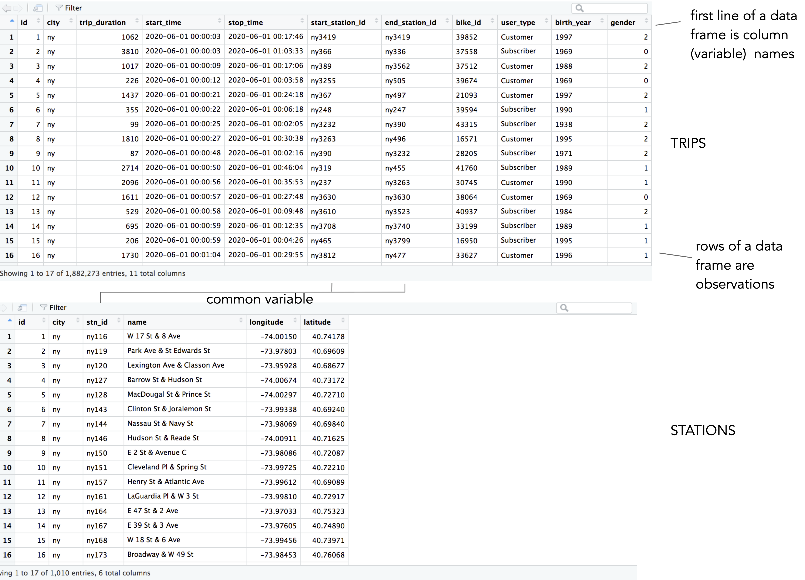
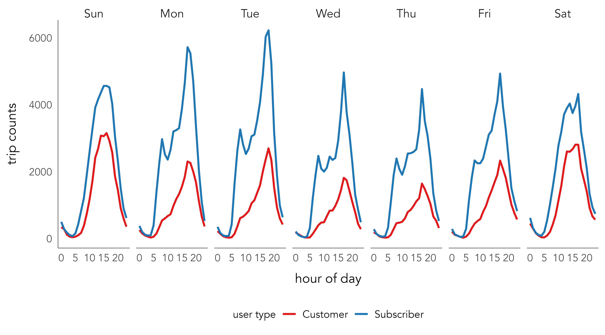
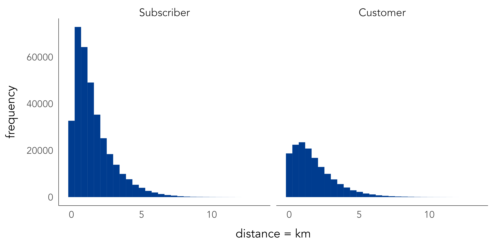
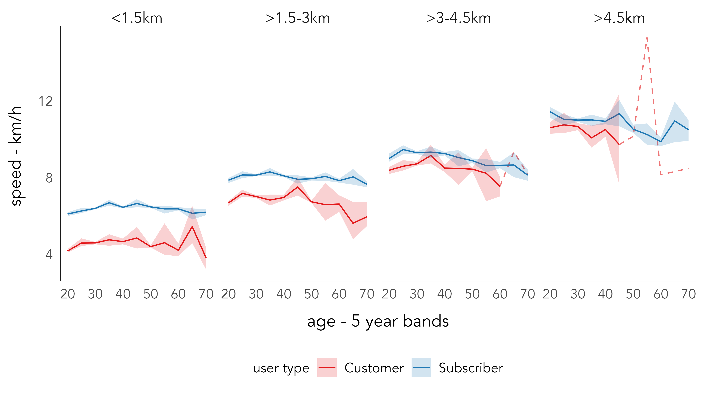

| Measurement | Example | Operators | Midpoint | Spread |
|---|---|---|---|---|
| Categories | ||||
| Nominal | Political parties; street names | = ≠ | mode | entropy |
| Ordinal | Terrorism threat levels | = ≠ <> | median | percentile |
| Measures | ||||
| Interval | Temperatures; years | = ≠ <> + - | mean | variance |
| Ratio | Distances; prices | = ≠ <> + - | × ÷ | mean | variance |
2 Data Fundamentals
By the end of this chapter you should gain the following knowledge and practical skills.
2.1 Introduction
This chapter covers the basics of how to describe and organise data. Whilst this might sound prosaic, there are several reasons why being able to consistently describe a dataset is important. First, it is the initial step in any analysis and helps delimit the analytical procedures that can be deployed. This is especially relevant to modern data analysis, where it is common to apply the same analysis templates for working over many different datasets. Describing data using a consistent vocabulary enables you to identify which analysis templates to reuse. Second relates to the point in Chapter 1 that social data science projects usually involve repurposing datasets for the first time. It is often not obvious whether a dataset contains sufficient detail and structure to characterise the behaviours being researched and the target populations it is assumed to represent. This leads to additional levels of uncertainty and places greater importance on the initial steps of data processing, description and exploration.
Through the chapter we will develop vocabulary for describing and thinking about data, as well as some of the most important data processing and organisation techniques in R . We will do so using data from New York’s Citibike scheme.
Data vocabulary
Applying a consistent vocabulary to describing your data is especially useful to learning modern visualization toolkits (ggplot2, Tableau, vega-lite). We will expand upon this in some detail in Chapter 3 as we introduce Visualization Fundamentals and the Grammar of Graphics (Wilkinson 1999).
2.2 Concepts
2.2.1 Data frames
Throughout this book we will work with data frames. These are spreadsheet-like representations where rows are observations and columns are variables. In an R data frame, variables are vectors that must be of equal length. Where observations have missing values for certain variables the missing values must be substituted with something, usually with NA or similar. This constraint can cause difficulties. For example, when working with variables that contain many values of different length for an observation. In these cases we create a special class of column, a list-column. Organising data according to this simple structure – rows as observations, columns as variables – is especially useful for applying analysis templates typical of the tidyverse ecosystem.
2.2.2 Types of variable
A familiar classification for describing variables is that developed by Stevens (1946) when considering the level of measurement of a variable. Stevens (1946) organises variables into two classes: variables that describe categories of things and variables that describe measurements of things.
Categories include attributes like gender, customer segments, ranked orders (1st, 2nd, 3rd largest etc.). Measurements include quantities like distance, age, travel time. Categories can be further subdivided into those that are unordered (nominal) from those that are ordered (ordinal). Measurements can also be subdivided. Interval measurements are quantities where the computed difference between two values is meaningful. Ratio measurements have this property, but also have a meaningful 0, where 0 means the absence of something, and the ratio of two values can be computed.
Why is this useful? The measurement level of a variable determines the types of data analysis operations that can be performed and therefore allows us to make quick decisions when working with a dataset for the first time (Table 2.1).
2.2.3 Types of observation
Observations either together form an entire population or a sample that we expect is representative of a target population. In social data science applications we often work with datasets that are so-called population-level. The Citibike dataset is a complete, population-level dataset in that every journey made through the scheme is recorded. Whether or not this is truly a population-level dataset, however, depends on the analysis purpose. When analysing trips made by Citibike users are we interested only in describing use within Citibike? Or are we taking the patterns observed through our analysis to make claims and inferences about New York cycling more generally? If the latter, then there are problems as the level of detail we have on our sample is pretty trivial compared to traditional, actively-collected datasets, where data collection activities are designed with a target population in mind. It may therefore be difficult to gauge how representative Citibike users and Citibike cycling is of New York’s general cycling population. The flipside is that so-called passively-collected data may not suffer from the same problems such as non-response bias and social-desirability bias as traditional, actively-collected data.
2.2.4 Tidy data
Throughout the book we will work with data frames organised such that columns always and only refer to variables and rows always and only refer to observations. This arrangement, called tidy (Wickham 2014), has two key advantages. First, if data are arranged in this tidy form then it is easier to apply and re-use tools for wrangling them due to data having the same underlying structure. Second, placing variables into columns, with each column containing a vector of values, means that we can take advantage of R’s vectorised functions for transforming data. This is demonstrated in the technical element of the chapter.
The three rules for tidy data:
- Each variable forms a column.
- Each observation forms a row.
- Each type of observation unit forms a table.
The concept of tidy data, and its usefulness for tidyverse-style operations, is best explained through example. The technical element to this chapter is therefore comparatively lengthy and demonstrates key coding templates for organising and re-organising data frames for analysis.
2.3 Techniques
The technical element to this chapter imports, describes, transforms and tidies data from New York’s Citibike bikeshare system.
- Download the
02-template.qmdfile and save it to yourvis4sdsproject, created in Chapter 1. - Open your
vis4sdsproject in RStudio and load the template file by clickingFile>Open File ...>02-template.qmd.
2.3.1 Import
In the template file there is documentation on how to setup your R session with key packages – tidyverse , fst, lubridate, sf. The data were collected using the bikedata package. A subset of data from New York’s bikeshare scheme, Citibike, were collected for this chapter and can be downloaded from the book’s accompanying data repository1. Instructions for doing so are in the 02-template.qmd file.
The code for reading in these data may be familiar to most readers. The here package, which reliably creates paths relative to a project’s root, is used to pass the locations at which the New York trips and stations data are stored as a parameter to read_csv() and read_fst(). Notice that we use assignment (<-), so data are loaded as objects and appear in the Environment pane of your RStudio window.
# Read in local copies of the trips and stations data.
ny_trips <- read_fst(here("data", "ny_trips.fst"))
ny_stations <- read_csv(here("data", "ny_stations.csv"))
Note
fst is a special class of file that implements in the background various operations to speed-up reading and writing of data. This makes it possible to work with large datasets in-memory in R rather than connecting to a database and returning data summaries/subsets.
Inspecting the layout of the stations data with View(ny_stations) you will notice that the top line is the header and contains column (variable) names.

ny_trips and ny_stations as they appear when calling View().
The glimpse() function can be used to quickly describe a data frame’s dimensions. We have 500,000 trip observations in ny_trips and 11 variables; the 500,000 represents a random sample of c.1.9 million trips recorded in June 2020. The function also prints out the object type for each of these variables, with the variables either of type int, chr or dbl.
In this case the assignment needs correcting. start_time and stop_time may be better represented in date-time format; the station identifier variables (e.g. start_station_id) are more efficient when converted to int types; and the geographic coordinates, currently stored as text strings (chr), are better converted as floating points (dbl) or POINT geometry types (Pebesma 2018). In the 02-template.qmd file are code chunks for doing these conversions. There are some slightly more involved data transform procedures in this code, which you may wish to ignore at this stage.
glimpse(ny_trips)
## Rows: 500,000
## Columns: 11
## $ id <int> 1, 2, 3, 4, 5, 6, 7, 8, 9, 10, 11, 12, 13, 14, 15, 16, 17, 18, 19, 20, 21…
## $ city <chr> "ny", "ny", "ny", "ny", "ny", "ny", "ny", "ny", "ny", "ny", "ny", "ny", "…
## $ trip_duration <dbl> 1062, 3810, 1017, 226, 1437, 355, 99, 1810, 87, 2714, 2096, 1611, 529, 69…
## $ start_time <chr> "2020-06-01 00:00:03", "2020-06-01 00:00:03", "2020-06-01 00:00:09", "202…
## $ stop_time <chr> "2020-06-01 00:17:46", "2020-06-01 01:03:33", "2020-06-01 00:17:06", "202…
## $ start_station_id <chr> "ny3419", "ny366", "ny389", "ny3255", "ny367", "ny248", "ny3232", "ny3263…
## $ end_station_id <chr> "ny3419", "ny336", "ny3562", "ny505", "ny497", "ny247", "ny390", "ny496",…
## $ bike_id <chr> "39852", "37558", "37512", "39674", "21093", "39594", "43315", "16571", "…
## $ user_type <chr> "Customer", "Subscriber", "Customer", "Customer", "Customer", "Subscriber…
## $ birth_year <chr> "1997", "1969", "1988", "1969", "1997", "1990", "1938", "1995", "1971", "…
## $ gender <dbl> 2, 0, 2, 0, 2, 1, 2, 2, 2, 1, 1, 0, 2, 1, 1, 1, 1, 1, 1, 1, 1, 1, 1, 1, 1…glimpse(ny_stations)
## Rows: 1,010
## Columns: 6
## $ id <int> 1, 2, 3, 4, 5, 6, 7, 8, 9, 10, 11, 12, 13, 14, 15, 16, 17, 18, 19, 20, 21, 22, 2…
## $ city <chr> "ny", "ny", "ny", "ny", "ny", "ny", "ny", "ny", "ny", "ny", "ny", "ny", "ny", "n…
## $ stn_id <chr> "ny116", "ny119", "ny120", "ny127", "ny128", "ny143", "ny144", "ny146", "ny150",…
## $ name <chr> "W 17 St & 8 Ave", "Park Ave & St Edwards St", "Lexington Ave & Classon Ave", "B…
## $ longitude <chr> "-74.00149746", "-73.97803415", "-73.95928168", "-74.00674436", "-74.00297088", …
## $ latitude <chr> "40.74177603", "40.69608941", "40.68676793", "40.73172428", "40.72710258", "40.6…2.3.2 Manipulate
Manipulate with dplyr and pipes (|>)
dplyr is the foundational package within the tidyverse. It provides a grammar of data manipulation, with access to functions that can be variously combined to support most data processing and manipulation tasks. Once familiar with dplyr functions you will find yourself generating analysis templates to re-use whenever working on a dataset.
All dplyr functions operate in a consistent way:
- Start with a data frame.
- Pass arguments to a function performing some updates to the data frame.
- Return the updated data frame.
So every dplyr function expects a data frame and will always return a data frame.
| function() | Description |
|---|---|
| filter() | Picks rows (observations) if their values match a specified criteria |
| arrange() | Reorders rows (observations) based on their values |
| select() | Picks a subset of columns (variables) by name (or name characteristics) |
| rename() | Changes the name of columns in the data frame |
| mutate() | Adds new columns |
| group_by() | Chunks the dataset into groups for grouped operations |
| summarise() | Calculates single-row (non-grouped) or multiple-row (if grouped) summary values |
| ... |
dplyr functions are designed to be chained together – you will see this shortly as we explore the New York bikeshare data. This chaining of functions can be achieved using the pipe operator (|>). Pipes are mechanisms for passing information in a program. They take the output of a set of code (a dplyr specification) and make it the input of the next set (another dplyr specification). Pipes can be easily applied to dplyr functions and the functions of all packages that form the tidyverse. We mentioned in Chapter 1 that ggplot2 provides a framework for specifying a layered grammar of graphics (more on this in Chapter 3). Together with the pipe operator, dplyr supports a layered grammar of data manipulation. You will see this throughout the book as we develop and re-use code templates for performing some data manipulation that is then piped to a ggplot2 specification for visual analysis.
count() and summarise() over rows
Let’s combine some dplyr functions to generate statistical summaries of the New York bikeshare data. First we’ll count the number of trips made in June 2020 by user_type, a variable distinguishing casual users from those formally registered to use the scheme (Customer vs. Subscriber cyclists). dplyr has a convenience function for counting, so we could run the code below, also in the 02-template.qmd for this chapter.
# Take the ny_trips data frame.
ny_trips |>
# Run the count function over the data frame
# and set the sort parameter to TRUE.
count(user_type, sort=TRUE)
## user_type n
## 1 Subscriber 347204
## 2 Customer 152796There are a few things happening in the count() function. It takes the usr_type variable from ny_trips, organises or groups the rows in the data frame according to its values (Customer | Subscriber), counts the rows and then orders the summarised output descending on the counts.
Often you will want to do more than simply counting and you may also want to be more explicit in the way the data frame is grouped for computation. We’ll demonstrate this with a more involved analysis of the usage data and with some key aggregate functions (Table 2.4). A common workflow is to combine group_by() and summarise(), and in this case arrange() to replicate the count() example.
# Take the ny_trips data frame.
ny_trips |>
# Group by user_type.
group_by(user_type) |>
# Count the number of observations per group.
summarise(count=n()) |>
# Arrange the grouped and summarised (collapsed) rows
# according to count.
arrange(desc(count))
## # A tibble: 2 × 2
## user_type count
## <chr> <int>
## 1 Subscriber 347204
## 2 Customer 152796In ny_trips there is a variable measuring trip duration in seconds (trip_duration). It may be instructive to calculate some summary statistics to see how trip duration varies between these groups. The code below uses group_by(), summarise() and arrange() in exactly the same way, but with the addition of other aggregate functions summarises the trip_duration variable according to central tendency (mean and standard deviation) and by user_type.
# Take the ny_trips data frame.
ny_trips |>
mutate(trip_duration=trip_duration/60) |>
# Group by user type.
group_by(user_type) |>
# Summarise over the grouped rows,
# generate a new variable for each type of summary.
summarise(
count=n(),
avg_duration=mean(trip_duration),
median_duration=median(trip_duration),
sd_duration=sd(trip_duration),
min_duration=min(trip_duration),
max_duration=max(trip_duration)
) |>
# Arrange on the count variable.
arrange(desc(count))
## # A tibble: 2 × 7
## user_type count avg_duration median_duration sd_duration min_duration max_dur…¹
## <chr> <int> <dbl> <dbl> <dbl> <dbl> <dbl>
## 1 Subscriber 347204 20.3 14.4 116. 1.02 33090.
## 2 Customer 152796 43.3 23.1 383. 1.02 46982.
## # … with abbreviated variable name ¹max_durationAs each line is commented you hopefully get a sense of what is happening in the code above. You will notice that dplyr functions read like verbs. With the code laid out as above – each dplyr verb occupying a single line, separated by a pipe (|>) – the code can be understood at a glance. Once you are familiar with dplyr it becomes very easy to read, write, re-use and share code in this way.
summarise().
| Function | Description |
|---|---|
| n() | Counts the number of observations |
| n_distinct(var) | Counts the number of unique observations |
| sum(var) | Sums the values of observations |
| max(var)|min(var) | Finds the min|max values of observations |
| mean(var)|median(var)| ... | Calculates central tendency of observations |
| ... | Many more |
Note
Remembering that pipes take the output of a set of code and make it the input of the next set, you will notice separate lines for each call to the pipe operator. This is good practice for supporting readability of your code, and for debugging and learning how your data is affected by each line of code. Especially if dplyr is new to you, we recommend you run each code line separated by a pipe (|>) in the Console and observe how the dataset is changed.
Manipulate dates with lubridate
Let’s continue this investigation of trips by user-type by profiling how usage varies over time. To do this we will need to work with date-time variables. The lubridate package provides various convenience functions for this.
In the code block below we extract the day of week and hour of day from the start_time variable using lubridate’s day accessor functions. Documentation on these can be accessed in the usual way (?<function-name>). Next we count the number of trips made by hour of day, day of week and user-type. The summarised data frame will be re-used several times in our analysis, so we store it as an object with a suitable name (ny_temporal) using the assignment operator.
# Create an hour of day and day of week summary by user type
# and assign it the name "ny_temporal".
ny_temporal <- ny_trips |>
mutate(
# Create a new column to identify dow.
day=wday(start_time, label=TRUE),
# Create a new column to identify hod.
hour=hour(start_time)) |>
# Group by day, hour, user_type.
group_by(user_type, day, hour) |>
# Count the grouped rows.
summarise(count=n()) |>
ungroup()
Note
Whether or not to store derived data frames, like the newly assigned ny_temporal, in a session is not an easy decision. You should avoid cluttering the Environment pane with many data objects. Often when generating charts it is necessary to create these sorts of derived tables as input data to ggplot2. Adding derived data frames to the RStudio Environment pane each time an exploratory plot is created risks an unhelpfully large number of such tables. A general rule: if the derived data frame is to be used more than three times in a data analysis or is computationally intensive, create and assign it (<-) as a named object.
In Figure 2.2 these derived data are plotted. Code for creating this data graphic is in the template file. The plot demonstrates a familiar weekday-weekend pattern of usage. Trip frequencies peak in the morning and evening rush hours during weekdays and mid/late-morning and afternoon during weekends, with the weekday afternoon peak much larger than the morning peak. There are obvious differences in the type of trips made by subscribers versus customers – the temporal signature for subscribers appears to match slightly more closely what one would expect of commuting behaviour.

dplyr and lubridate.
Note
This analysis is based on data from June 2020, a time when New York residents were emerging from lockdown. It would be instructive to compare with data from a non-Covid year. The fact that bikeshare is collected continuously makes this sort of behavioural change analysis possible.
Relate tables with join()
Trip distance is not recorded directly in the ny_trips table, but may be important for profiling usage behaviour. Since ny_stations contains coordinates corresponding to station locations, distances can be calculated by linking these station coordinates to the origin and destination stations recorded in ny_trips. To relate the two tables we need to specify a join between them.
A sensible approach is to:
- Select all uniquely cycled trip pairs (origin-destination pairs) that appear in the
ny_tripstable. - Bring in the corresponding coordinate pairs representing the origin and destination stations by joining on the
ny_stationstable. - Calculate the distance between the coordinate pairs representing the origin and destination.
The code below is one way of achieving this.
# Take the ny_trips data frame.
od_pairs <- ny_trips |>
# Select trip origin and destination (OD) station columns
# and extract unique OD pairs.
select(start_station_id, end_station_id) |> unique() |>
# Select lon, lat columns from ny_stations and join on origin column.
left_join(
ny_stations |> select(stn_id, longitude, latitude),
by=c("start_station_id"="stn_id")
) |>
# Rename new lon, lat columns and associate with origin station.
rename(o_lon=longitude, o_lat=latitude) |>
# Select lon, lat columns from ny_stations and join on destination column.
left_join(
ny_stations |> select(stn_id, longitude, latitude),
by=c("end_station_id"="stn_id")
) |>
# Rename new lon, lat columns and associate with destination station.
rename(d_lon=longitude, d_lat=latitude) |>
# Compute distance calculation on each row (od_pair).
rowwise() |>
# Calculate distance and express in kms.
mutate(
dist=geosphere::distHaversine(c(o_lat, o_lon), c(d_lat, d_lon))/1000) |>
ungroup()The code block above introduces some new functions: select() to pick or drop variables, rename() to rename variables and a convenience function for calculating straight line distances from polar coordinates, distHaversine(). The key function to emphasise is the left_join(). If you’ve worked with relational databases, dplyr’s join functions will be familiar to you. In a left_join all the values from the first (left-most) table are retained, ny_trips in this case, and variables from the table on the right , ny_stations, are added. We specify the variable on which tables should be joined with the by= parameter, station_id in this case. If there is a station_id in ny_trips that doesn’t exist in ny_stations then corresponding cells are filled out with NA.
dplyr join functions.
| left_join() | all rows from table x |
| right_join() | all rows from table y |
| full_join() | all rows from both table x and y |
| `semi_join()` | all rows from table x where there are matching values in table y, keeping just columns from table x |
| inner_join() | all rows from table x where there are matching values in table y, returning all combinations where there are multiple matches |
| anti_join | all rows from table x where there are not matching values in table y, never duplicating rows of table x |
From the newly created distance variable we can calculate the average (mean) trip distance for the 500,000 sampled trips – 1.6km. This might seem very short, but remember that these are straight-line distances between pairs of docking stations. Ideally we would calculate distances derived from cycle trajectories. A separate reason, discovered when generating a histogram on the dist variable, is that there are a large number of trips that start and end at the same docking station. Initially these might seem to be unsuccessful hires – people failing to undock a bike for example. We could investigate this further by paying attention to the docking stations at which same origin-destination trips occur, as in the code block below.
ny_trips |>
filter(start_station_id==end_station_id) |>
group_by(start_station_id) |> summarise(count=n()) |>
left_join(
ny_stations |> select(stn_id, name),
by=c("start_station_id"="stn_id")
) |>
arrange(desc(count))
## # A tibble: 958 x 3
## start_station_id count name
## <chr> <int> <chr>
## 1 ny3423 2017 West Drive & Prospect Park West
## 2 ny3881 1263 12 Ave & W 125 St
## 3 ny514 1024 12 Ave & W 40 St
## 4 ny3349 978 Grand Army Plaza & Plaza St West
## 5 ny3992 964 W 169 St & Fort Washington Ave
## 6 ny3374 860 Central Park North & Adam Clayton Powell Blvd
## 7 ny3782 837 Brooklyn Bridge Park - Pier 2
## 8 ny3599 829 Franklin Ave & Empire Blvd
## 9 ny3521 793 Lenox Ave & W 111 St
## 10 ny2006 782 Central Park S & 6 Ave
## # … with 948 more rowsThe top 10 docking stations are either in parks, near parks or located along the river. This, coupled with the fact that same origin-destination trips occur in much greater relative number for casual users, associated with discretionary leisure-oriented cycling, than regular users (customers vs subscribers) is further evidence that these are valid trips. Note also the different shapes in the distribution of distances for trips cycled by subscribers and customers (Figure 2.3), again suggesting these groups may use Citibike in different ways.

Write functions of your own
There may be times where you need to create functions of your own. Most often this is when you find yourself copy-pasting the same chunks of code with minimal adaptation.
Functions have three key characteristics:
- They are (usually) named – the name should be expressive and communicate what the function does.
- They have brackets
<function-name()>usually containing arguments – inputs, which determine what the function does and returns. - Immediately followed by
<function-name()>are curly brackets ({}) used to contain the body – code that performs a distinct task, described by the function’s name.
Effective functions are short and perform single, discrete operations.
You will recall that in the ny_trips table there is a variable called birth_year. From this we can derive cyclists’ approximate age in years. Below is a function called get_age(). The function expects two arguments: yob – a year of birth as type chr; and yref – a reference year. In the body, lubridate’s as.period() function is used to calculate the time in years that elapsed between these dates.
# get_age() depends on lubridate.
library(lubridate)
# Calculate time elapsed between two dates in years (age).
# yob : datetime object recording birth year.
# yref : datetime object recording reference year.
get_age <- function(yob, yref) {
period <- as.period(interval(yob, yref),unit = "year")
return(period$year)
}
ny_trips <- ny_trips |>
# Calculate age from birth_date.
mutate(
age=get_age(
as.POSIXct(birth_year, format="%Y"),
as.POSIXct("2020", format="%Y")
)
)We can use the two new derived variables – distance travelled and age – in our analysis. In Figure 2.4, we explore how approximate travel speeds vary by age, trip distance and customer type. The code to generate the summary data and plot is in the template file. Again the average speed calculation should be treated cautiously as it is based on straight line distances and it is likely that this will vary depending on whether the trip is made for ‘utilitarian’ or ‘leisure’ purposes. Additionally, due to the heavy subsetting data become a little volatile for certain age groups and so the age variable is aggregated into 5-year bands.
There are some notable patterns in Figure 2.4. Subscribers make faster trips than do customers, although this gap narrows as trip distance increases. Trips with a straight-line distance of 4.5km are non-trivial and so may be classed as utilitarian even for non-regular customers. There is a very slight effect of decreasing trip speed by age cycled for the longer trips. The volatility in the older age groups for trips >4.5km suggests more data and a more involved analysis is required to confidently establish this. For example, it may be that the comparatively rare occurrence of trips in the 65-70 age group is made by only a small subset of cyclists; with a larger dataset we may expect a regression to the mean effect that negates noise caused by outlier individuals.

2.3.3 Tidy
The ny_trips and ny_stations data already comply with the rules for tidy data (Wickham 2014). Each row in ny_trips is a distinct trip and each row in ny_stations a distinct station. However, it is common to encounter datasets that are untidy and must be reshaped. In the book’s data repository are two examples: ny_spread_rows and ny_spread_columns. ny_spread_rows is so-called because the variable summary_type is spread across the rows (observations); ny_spread_columns because multiple variables are stored in single columns – the dist_weekday, duration_weekday columns.
ny_spread_rows
## # A tibble: 411,032 × 6
## o_station d_station wkday count summary_type value
## <dbl> <dbl> <chr> <dbl> <chr> <dbl>
## 1 72 116 weekend 1 dist 1.15
## 2 72 116 weekend 1 duration 18.2
## 3 72 127 weekend 4 dist 7.18
## 4 72 127 weekend 4 duration 122.
## 5 72 146 weekend 4 dist 9.21
## 6 72 146 weekend 4 duration 122.
## 7 72 164 weekend 1 dist 2.66
## 8 72 164 weekend 1 duration 12.5
## 9 72 173 weekend 2 dist 2.13
## 10 72 173 weekend 2 duration 43.6
## # … with 411,022 more rows
ny_spread_columns
## # A tibble: 156,449 × 8
## o_station d_station count_weekend count_weekday dist_w…¹ dist_…² durat…³ durat…⁴
## <dbl> <dbl> <dbl> <dbl> <dbl> <dbl> <dbl> <dbl>
## 1 72 116 1 3 1.15 3.45 18.2 49.9
## 2 72 127 4 4 7.18 7.18 122. 101.
## 3 72 146 4 2 9.21 4.61 122. 64.1
## 4 72 164 1 1 2.66 2.66 12.5 43.2
## 5 72 173 2 13 2.13 13.9 43.6 189.
## 6 72 195 1 4 2.56 10.2 24.7 98.3
## 7 72 212 3 3 4.83 4.83 40.3 54.0
## 8 72 223 1 NA 1.13 NA 21.1 NA
## 9 72 228 2 1 4.97 2.49 30.2 13.6
## 10 72 229 1 NA 1.22 NA 39.2 NA
## # … with 156,439 more rows, and abbreviated variable names ¹dist_weekend,
## # ²dist_weekday, ³duration_weekend, ⁴duration_weekdayTo re-organise the table in tidy form, we should identify what constitutes a distinct observation – an origin-destination pair summarising counts, distances and durations of trips that occur during the weekday or weekend. From here, the table’s variables are:
-
o_station: station id of the origin station -
d_station: station id of the destination station -
wkday: trip occurs on weekday or weekend -
count: count of trips for observation type -
dist: total straight-line distance in km (cumulative) of trips for observation type -
duration: total duration in minutes (cumulative) of trips for observation type
There are two functions for reshaping untidy data, from the tidyr package: pivot_longer() and pivot_wider(). pivot_longer() is used to tidy data in which observations are spread across columns; pivot_wider() to tidy data in which variables are spread across rows. The functions are especially useful in visual data analysis to fix messy data, but also to flexibly reshape data supplied to ggplot2 specifications (more on this in Chapters 3 and 4).
To fix ny_spread_rows, we use pivot_wider() and pass to the function’s arguments the name of the problematic column and the column containing values used to populate the newly created columns.
ny_spread_rows |>
pivot_wider(names_from=summary_type, values_from=value)
## # A tibble: 205,516 × 6
## o_station d_station wkday count dist duration
## <dbl> <dbl> <chr> <dbl> <dbl> <dbl>
## 1 72 116 weekend 1 1.15 18.2
## 2 72 127 weekend 4 7.18 122.
## 3 72 146 weekend 4 9.21 122.
## 4 72 164 weekend 1 2.66 12.5
## 5 72 173 weekend 2 2.13 43.6
## 6 72 195 weekend 1 2.56 24.7
## 7 72 212 weekend 3 4.83 40.3
## 8 72 223 weekend 1 1.13 21.1
## 9 72 228 weekend 2 4.97 30.2
## 10 72 229 weekend 1 1.22 39.2
## # … with 205,506 more rowsTo fix ny_spread_columns requires a little more thought. First we pivot_longer() on columns that are muddled with multiple variables. This results in a long and thin dataset similar to ny_spread_rows – each row is the origin-destination pair with either a count, distance or duration recorded for trips occurring at weekends or weekdays. The muddled variables, for example dist_weekend duration_weekday, now appear in the rows of a new column with the default title name. This column is separated on the _ mark to create two new columns, summary_type and wkday, used in pivot_wider().
ny_spread_columns |>
pivot_longer(cols = count_weekend:duration_weekday) |>
separate(col = name, into = c("summary_type", "wkday"), sep = "_") |>
pivot_wider(names_from = summary_type, values_from = value)
## # A tibble: 312,898 × 6
## o_station d_station wkday count dist duration
## <dbl> <dbl> <chr> <dbl> <dbl> <dbl>
## 1 72 116 weekend 1 1.15 18.2
## 2 72 116 weekday 3 3.45 49.9
## 3 72 127 weekend 4 7.18 122.
## 4 72 127 weekday 4 7.18 101.
## 5 72 146 weekend 4 9.21 122.
## 6 72 146 weekday 2 4.61 64.1
## 7 72 164 weekend 1 2.66 12.5
## 8 72 164 weekday 1 2.66 43.2
## 9 72 173 weekend 2 2.13 43.6
## 10 72 173 weekday 13 13.9 189.
## # … with 312,888 more rows2.4 Conclusions
Developing the vocabulary and technical skills to systematically describe and organise data is crucial to modern data analysis. This chapter has covered the fundamentals: that data consist of observations and variables of different types (Stevens 1946) and that in order to work effectively with datasets, these data should be organised such that they are tidy (Wickham 2014). Most of the content was dedicated to the techniques that enable these concepts to be operationalised. We covered how to download, transform and reshape a reasonably large dataset from New York’s Citibike scheme. In doing so, we generated insights that might inform further data collection and analysis activity. In the next chapter we will extend this conceptual and technical knowledge as we introduce the fundamentals of visual data analysis and ggplot2’s grammar of graphics.
2.5 Further Reading
There are many accessible introductions to the tidyverse for modern data analysis. Two excellent resources:
- Wickham, H., Çetinkaya-Rundel, M., Grolemund, G. 2023, “R for Data Science, 2nd Edition”, O’rielly.
- Chapter 4.
- Ismay, C. and Kim, A. 2020. “Statistical Inference via Data Science: A ModernDive into R and the Tidyverse” CRC Press. doi: 10.1201/9780367409913.
- Chapters 3, 4.
Hadley Wickham’s original paper on Tidy Data:
- Wickham, H. 2010. “Tidy Data” Journal of Statistical Software, 59(10): 1–23. doi: 10.18637/jss.v059.i10.
https://github.com/vis4sds/data↩︎